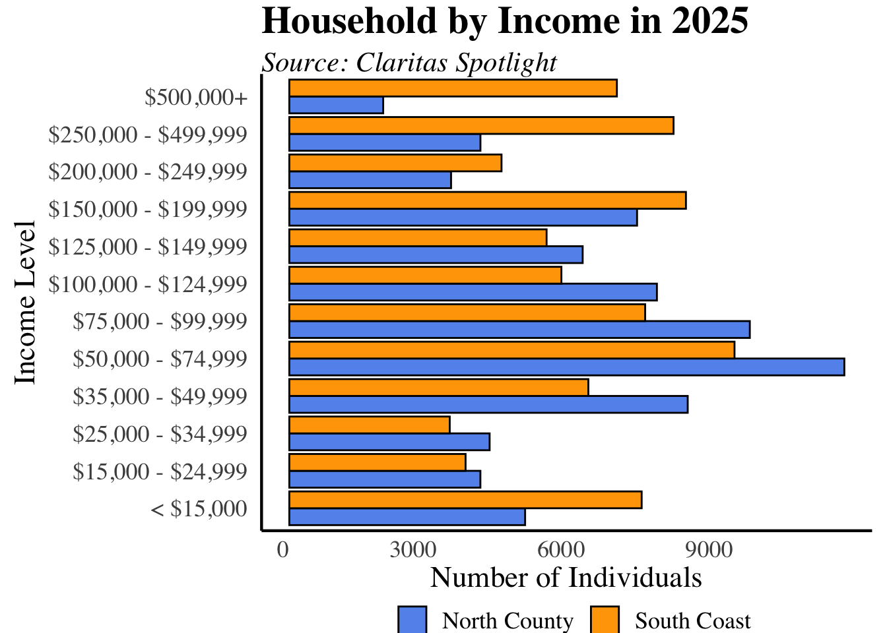
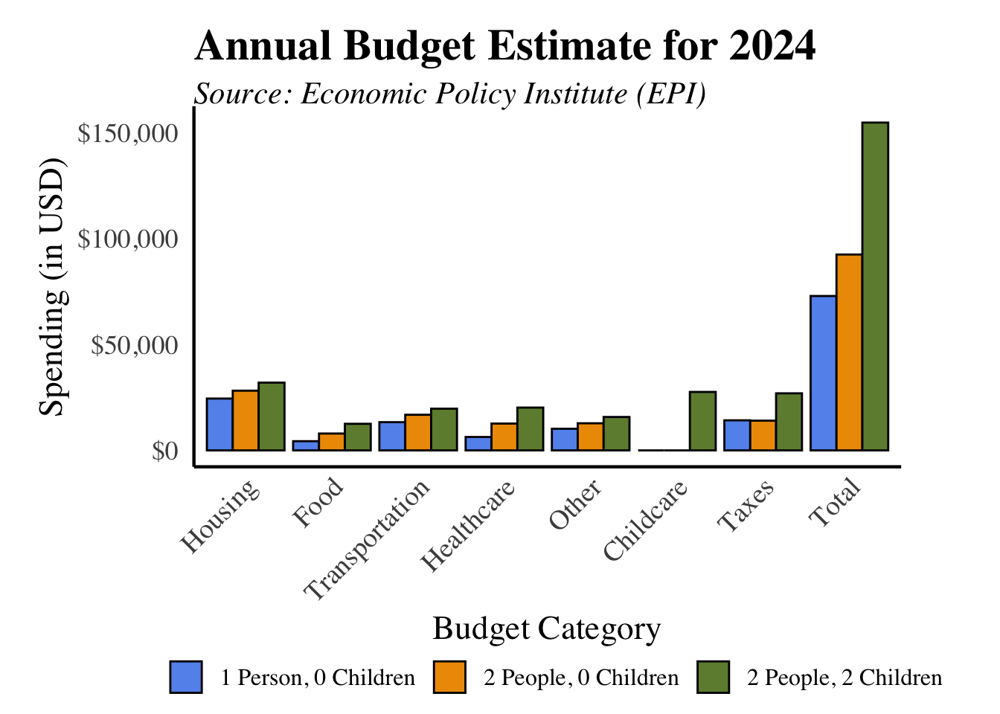
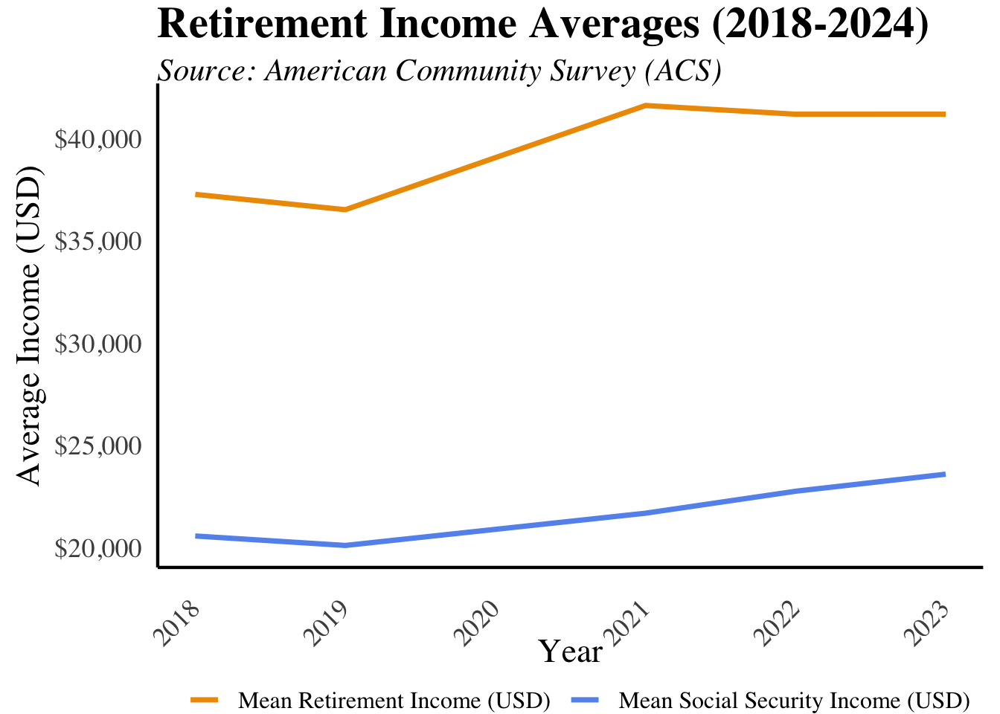
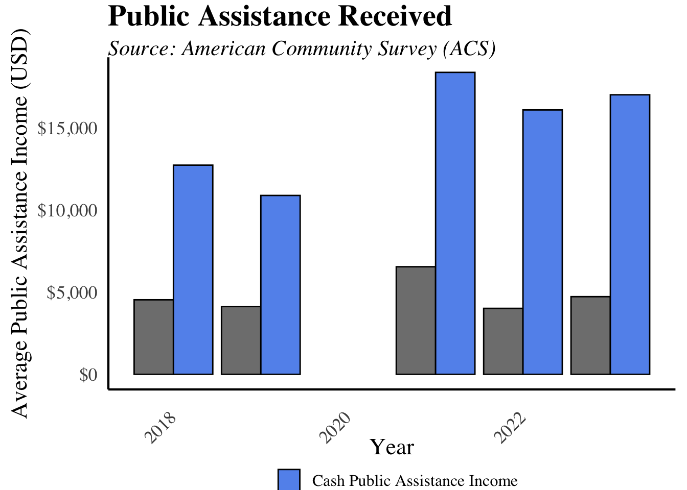
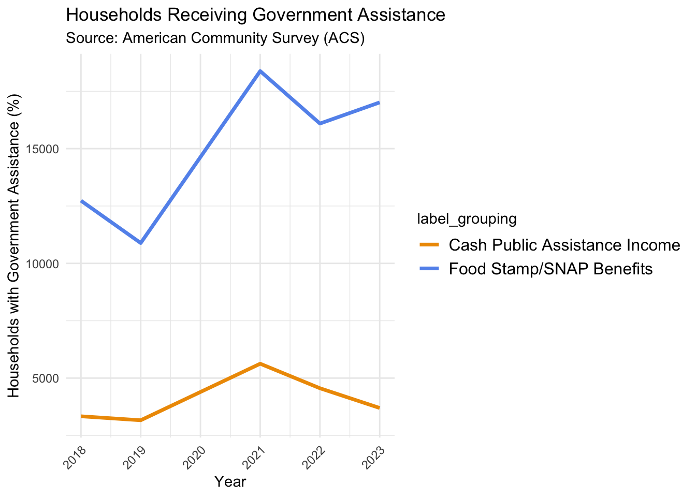

Community Indicators Project
UCSB Economic Forecast Project
Introduction
Social Indicators
Demographics
Population Growth
Community Well-being
Homelessness
Poverty Rates UPDATE (graphs & analysis)
Crime in Santa Barbara
Health
Heart Diseases Remain the Leading Cause of Death in Santa Barbara County
Economic
Standard of Living
Household Income
Household Budgets
Retirement
Published with bookdown
Economic
Standard of Living
Household Income

Household Budgets

Retirement
 ### Public Assistance {-} 